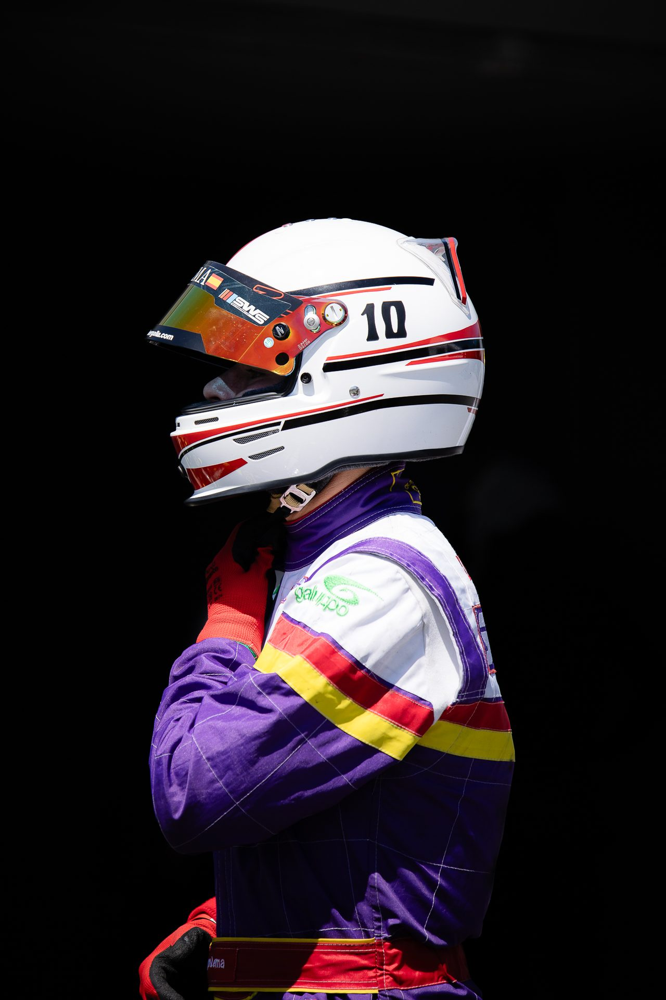
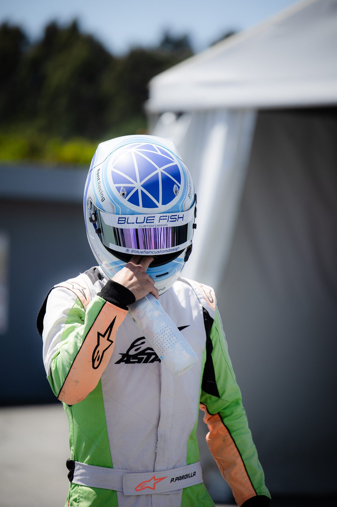

España y Portugal
Fotografía de karting y motorsport
Carreras, entrenamientos y retratos de pilotos, en pista y en el paddock.
El servicio
En la pista y en el paddock
Fotografío las carreras y lo que pasa alrededor: la parrilla de salida, el trabajo de los mecánicos, los pilotos antes y después de cada manga, el podio.
Antes de la carrera acordamos qué es prioritario: un piloto, un equipo o el evento completo. Después recibes las fotografías editadas, listas para redes sociales, prensa y patrocinadores. He fotografiado carreras en España y Portugal, como la Sodi Galicia y la Regional Cup.
En pistaAdelantamientos, frenadas y luchas por posición.
En el paddockPreparación, mecánicos y retratos de pilotos.
EntregaFotografías editadas, listas para publicar.



Cómo funciona
Del encargo a la entrega
Antes
Cuéntame la fecha, el circuito y lo que necesitas.
En carrera
Fotografío en pista y en el paddock durante la carrera.
Después
Recibes las fotografías editadas en el plazo acordado.